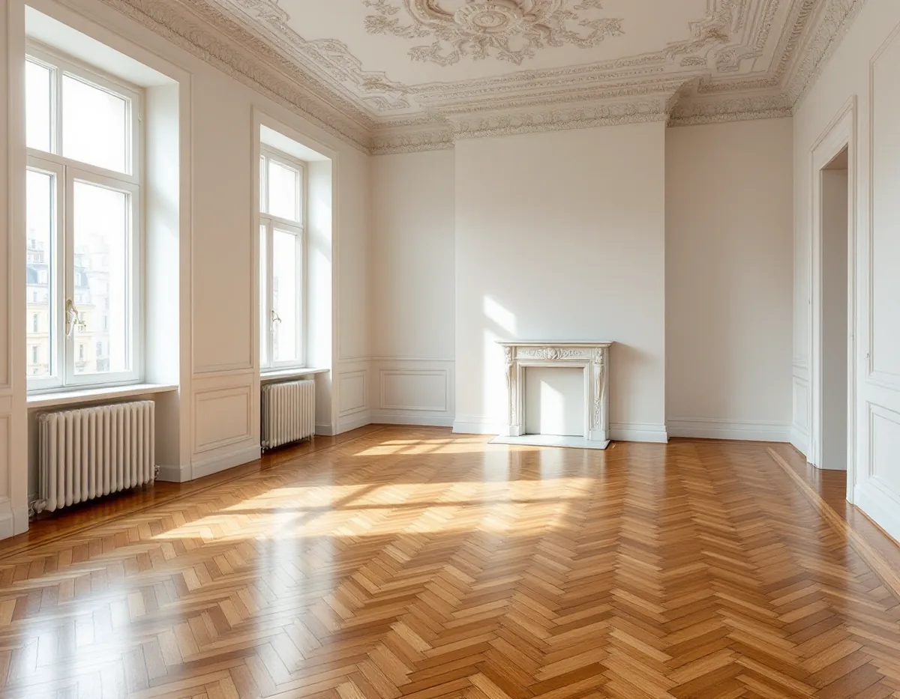
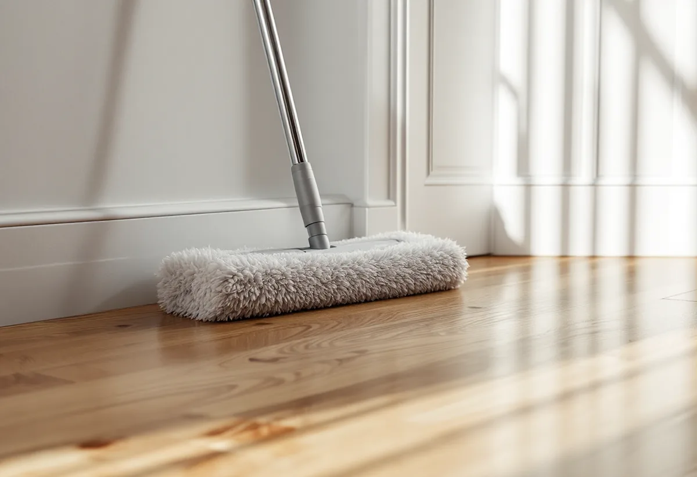

Platsbesök
Vi tittar på lacken i gångstråken och frågar vilka medel golvet har skötts med.
Ett lackat trägolv med gråa gångstråk behöver inte nödvändigtvis slipas ner till bart trä. Ibland räcker en lätt puts och ett nytt lager lack, ibland ett underhållsmedel som moppas på. Geal Entreprenad AB slipar och ytbehandlar trägolv på Östermalm och börjar med att ta reda på vad golvet behöver och vad det har behandlats med tidigare.

I stadens områdesfakta för stadsdelen Oscars kyrka fanns 10 022 bostäder 2025. Av dem var 7 735 bostadsrätter och bara 8 låg i småhus. På Gärdet var motsvarande siffror 15 571 bostäder och 9 370 bostadsrätter. Golven i de här lägenheterna har ofta haft flera ägare före dig.
Ett massivt trägolv kan enligt Golvbranschen renoveras så länge det finns en godtagbar tjocklek kvar. Har tidigare ägare slipat det flera gånger kan det mesta redan vara borta. Innan vi föreslår en ny slipning kontrollerar vi därför tjockleken, till exempel med en kniv i en springa i ett hörn av rummet, som riktlinjerna SLIP 22 beskriver. Samma riktlinjer påpekar att det inte är luftfuktigheten i sig som ställer till det för ytbehandlingen, utan variationerna i den.

Golvbranschens riktlinjer för underhåll av trägolv, UNDERHÅLL 22, beskriver en trappa av åtgärder. Vid små repor, så kallade mikrorepor, används en underhållslack, lackrefresher, som läggs på med mopp efter att golvet har städats och våttorkats. Rekommenderad mängd är en liter till 50–80 kvadratmeter, och slitaget avgör hur ofta det behöver göras.
Vid större repor och skadad lackyta är nästa steg överlackering. Golvet rengörs och putsas lätt med fint slippapper innan ett nytt lager lack stryks, och riktlinjerna säger att ett vidhäftningsprov ska göras först. Är träet blottat eller golvet vattenskadat krävs en renovering med slipning. De flesta trägolv kan enligt riktlinjerna i regel maskinslipas flera gånger.
Bedömningen görs på plats och kan bli olika i olika rum. Ett gångstråk mellan hall och kök kan vara nött ner till trä medan sovrummet bara har ytliga repor.
En överlackering förutsätter att golvet inte har behandlats med vax eller polish. Har det gjorts måste det tidigare lackskiktet enligt UNDERHÅLL 22 slipas bort helt innan ny lack stryks. Därför frågar vi vilka medel golvet har skötts med, och är det osäkert gör vi ett prov.
Silikon är en annan fälla. LACK 22 varnar för att silikon lägger sig som en tunn film på golvet och hindrar lacken från att fästa. Det åtgärdas genom att all silikon avlägsnas och redskap och ytor tvättas rena.
Ett nyare golv som lackats på fabrik är ett eget fall. Enligt LACK 22 ger fabrikslack i regel en tåligare yta än de lacker som används vid renovering på plats, och kunden ska göras uppmärksam på att en överlackering kan ge en sämre yta. UNDERHÅLL 22 skriver också att dagens fabrikslacker är så slitstarka att behovet av maskinslipning har minskat.
Det mesta slitaget kommer in med skorna. UNDERHÅLL 22 råder att lägga en väl tilltagen avtorkningsmatta både utanför och innanför entrén och skriver att den effektivaste åtgärden i en bostad är att lämna ytterskorna i hallen och sätta möbeltassar på alla möbler.
Städa i första hand torrt, med dammsugare med borstmunstycke eller torrmopp, och fukttorka vid behov med en väl urvriden duk. Riktlinjerna anger 30–60 procents relativ luftfuktighet och en temperatur kring 20 grader för att golvet inte ska röra sig för mycket. Thinner, aceton och T-sprit skadar lacken och ska användas med stor försiktighet, och stålull och skurnylon kan repa den.
Fläckar tas bort innan de har hunnit torka in i lacken. Riktlinjerna har en fläcknyckel: kaffe, vin, saft och liknande tas bort med ett neutralt eller svagt alkaliskt rengöringsmedel utan ammoniak, utspätt i ljummet vatten, medan stearin och tuggummi kyls med is i en plastpåse och sedan skrapas bort försiktigt.
Ska golvet i stället bytas, till exempel i ett kök, finns mer under golvläggare på Östermalm. En jämförelse av lack, olja och såpa finns på sidan om golvläggning.
Vi tittar på lacken i gångstråken och frågar vilka medel golvet har skötts med.
Före överlackering görs ett vidhäftningsprov, och vid misstanke om vax en provyta.
Du får ett förslag på refresher, överlackering eller slipning med ytbehandlingen specificerad.
Golvet rengörs från smuts och gamla medel, och eventuell silikon tas bort.
En lätt puts med fint papper eller slipning i tre steg ner till trä.
Lacken stryks i rätt antal lager och du får råd om städning och underhåll.
Golvslipning räknas som rotarbete i en bostadsrätt om du enligt stadgarna har underhållsansvaret för golvet och arbetet görs inne i lägenheten. Avdraget gäller arbetskostnaden för att slipa och lacka, inte lacken eller andra material.
Avdraget är 30 procent av arbetskostnaden, upp till 50 000 kr per person och år, och tillsammans med rutavdrag högst 75 000 kr. Geal drar av det direkt på fakturan.
Om golvet behöver slipas ner till trä eller bara underhållas, hur stor ytan är och om golvet är mönsterlagt väger tyngst. Efter ett gratis platsbesök får du ett skriftligt kostnadsförslag.
Parkett, trägolv, klinker och slipning.
Golvläggning i Stockholm →Kulturvärden, förvanskningsförbud och klassning.
Badrumsrenovering på Östermalm →Mönsterparkett, lack och olja.
Golvläggare på Östermalm →Limfärg i taken, dekor och lov.
Målare på Östermalm →